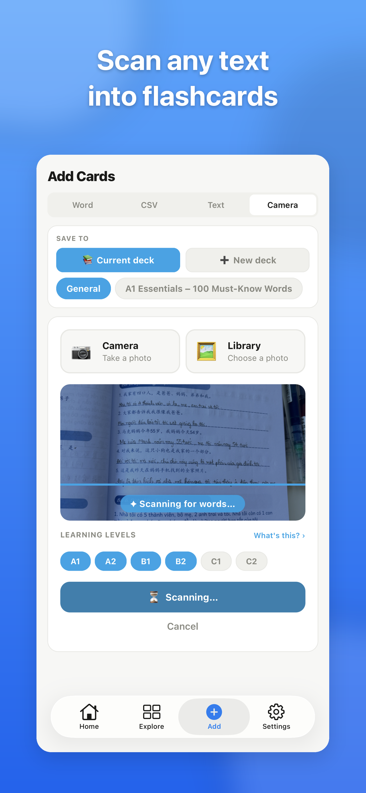
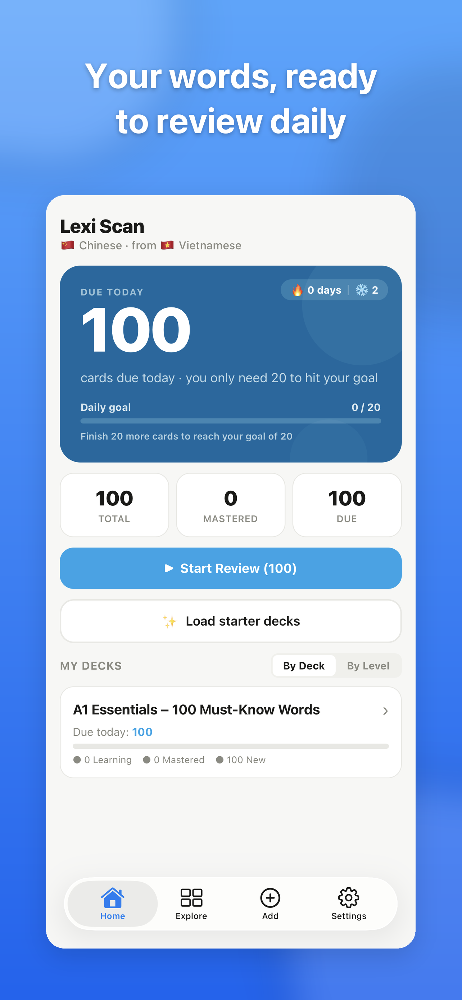
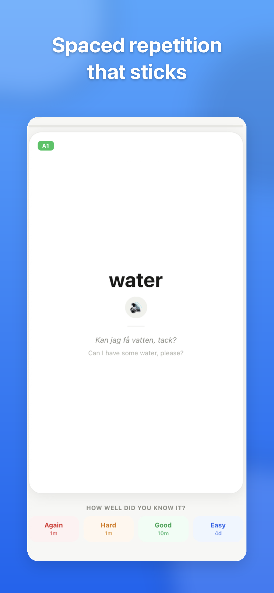
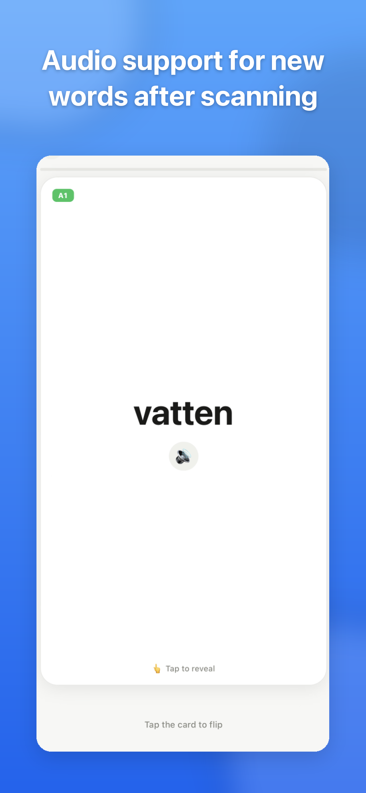
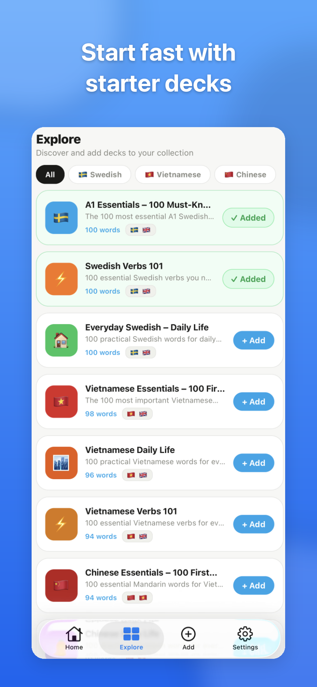

Lexi Scan: turn anything you read into flashcards
A hobby project born from my own Swedish-learning frustration, taken all the way to the App Store: discovery, design, build, and ship.
Role: Product, design & build · Built with: Claude AI · Status: Live on the App Store
The insight
The word you meet in the wild is the one you lose
I'm learning Swedish, and the best words never arrive at my desk. They show up mid-episode on TV, or halfway down a page of a book. To actually keep one, the old routine was brutal: stop, note it down, open a translator, then later sit and hand-build a flashcard. By the time I've done all that, I've missed the next scene, and most words never make it in at all.
The tools didn't help. Most Anki-style apps expect you to import words as a manual CSV file, which is exactly the kind of friction that kills a daily habit. That's the idea behind Lexi Scan: capture the word the moment you see it, let AI do the translating and card-making, and study it later with spaced repetition.
Who it's for: language learners who read and watch in the wild, people who want to grab a new word on the spot instead of losing it to the friction of making a card by hand.
The user journey
Mapping the moment a new word appears, and slips away
This map is a persona I built from my own experience, not formal research. I traced the real moment learning actually happens: not at a desk, but when a new word lands while you're mid-book or mid-episode. Mapping it made the drop-off obvious, the loss is never in the wanting to learn, it's in the friction between seeing a word and saving it.
Scroll the map sideways on mobile · the emotional dip is the capture step, exactly the friction Lexi Scan removes.
Reading the map top to bottom, the fix isn't “study harder”, it's removing the capture tax. If saving a word costs one tap instead of five steps, far more words survive the moment, and spaced repetition can do the rest.
The bet
Scan the word, don't build the card
The core product decision: never make the user assemble a flashcard by hand. Point the camera at a book, a subtitle, or a menu, or just paste text, and Gemini AI extracts the vocabulary, translates it, and files the card for you, ready to study. Free, on your device, no scan limits, because it runs on your own Gemini key instead of my server.






Building it
Designed and built end-to-end, with AI
I'm a product manager, not a full-time mobile engineer, so I paired with AI (Claude) to go from idea to a real, shipping app, choosing the stack, wiring up the AI and the review engine, and iterating screen by screen. I couldn't have hand-coded this, so the interesting story isn't the syntax, it's the product and design calls I made: what to build, what to cut, and how each screen should feel. It's a genuine cross-platform native app (Expo / React Native), not a prototype, with a spaced-repetition engine based on the same SM-2 algorithm Anki uses, and all flashcard data stored locally on the device.
Iterating
Shipping is where the real product questions start
Building surfaced the interesting problems. The biggest was the bring-your-own-key trade-off: using each user's own free Gemini key means no subscriptions and no scan limits, but it also adds a setup step most apps don't have. I chose to keep it, because “free with no limits” beats “a smooth start that later charges you” for the daily learner, and I paid it down with an in-app walkthrough that gets the key set up in about two minutes.
Real use also surfaced product tensions, and here's how I called them. On which words to surface, extracting everything buried the useful words in noise, so I added a CEFR level filter (A1 to C2) and made it default to the learner's level, keeping the deck relevant instead of overwhelming. On getting started, a blank deck is a dead end, so I shipped starter decks for Swedish and other languages to give a first review in seconds. My rule for calls like these: protect the fast capture-to-review loop first, add options only when they don't slow it down.
Shipping it
From Expo to the App Store
I packaged and submitted the whole thing myself: wrote the listing copy and keywords, produced the screenshots, set up the privacy policy, and shipped it free in the Education category, rated 4+. Privacy is the default, not a feature: flashcards and progress stay on the device, and scans go directly from your phone to Google with your own key, never through a server of mine.
Where it stands
Just launched, and now I'm watching it
Lexi Scan is newly on the App Store, so the honest status is: live, with performance tracking in progress. I'm treating launch as the start of the experiment, not the finish line, and measuring as real usage comes in.
What I set out to test: whether one-tap scanning actually gets more words captured than a manual routine, whether learners accept the bring-your-own-key trade-off in exchange for no limits, and whether the CEFR filter keeps decks relevant enough to keep people reviewing.
What I've learned so far: removing the capture tax is the whole product, the scan-to-card flow is what makes it feel effortless, and the free, no-limits, private positioning resonates more than any single feature. It's also my own daily driver for Swedish, which keeps the feedback loop honest.
Why it matters for the work I do
What this sharpened that I'd bring to a growth team
Building Lexi Scan solo forced me to own the full loop I usually influence as a Growth PM: spotting a real friction point, shaping a first-tap value proposition, ruthlessly protecting one core loop (capture to review), and making a hard onboarding trade-off (the API key) instead of hiding from it. It's the same instinct I bring to onboarding and activation work, just with my hands on every part of it.